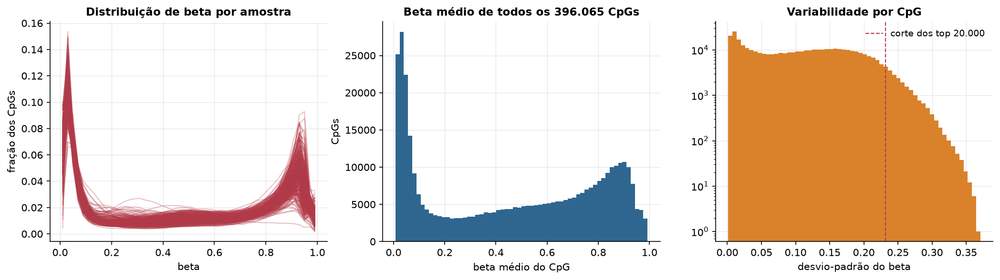
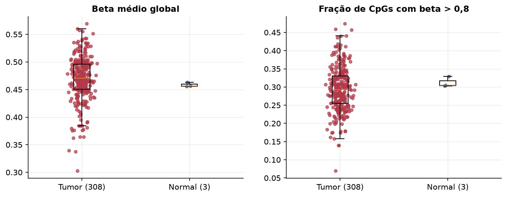
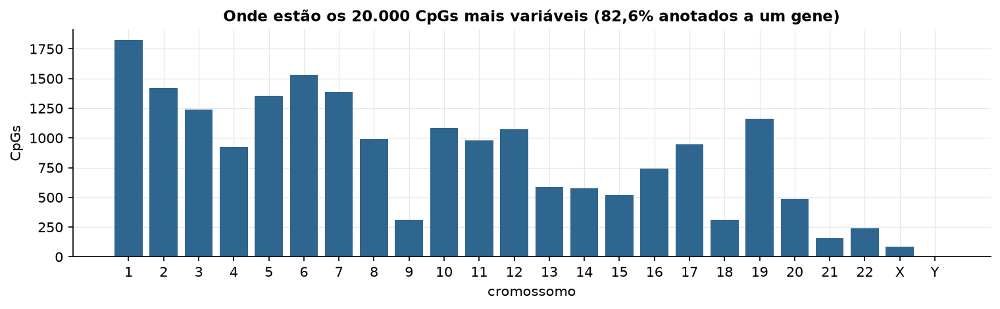
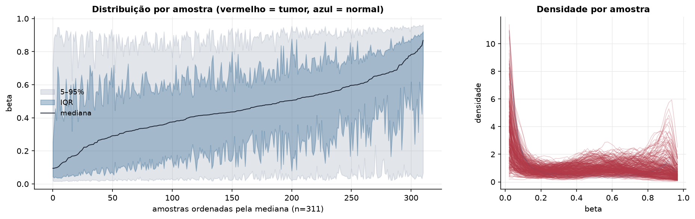
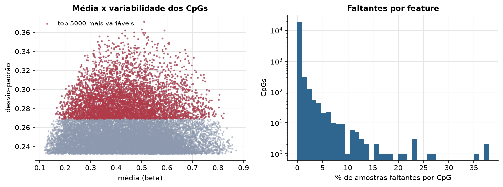
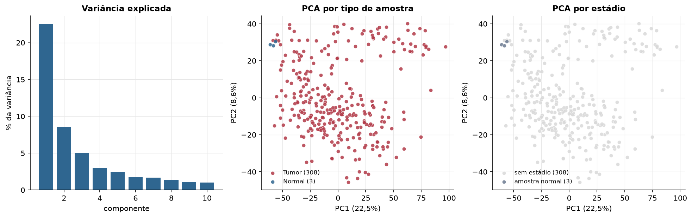
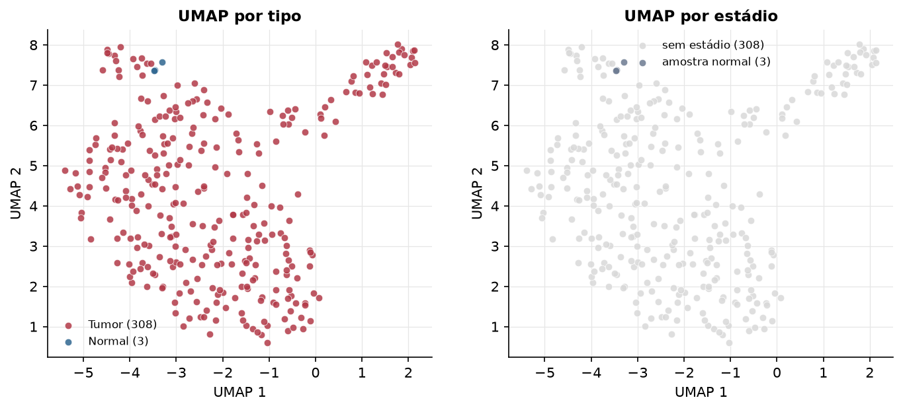
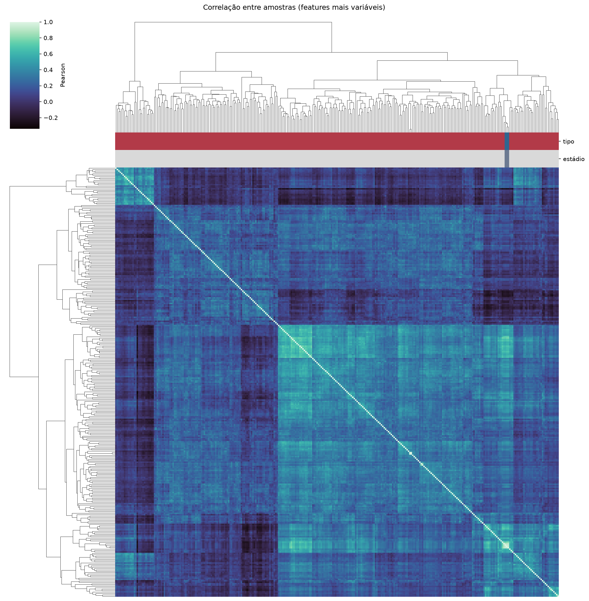
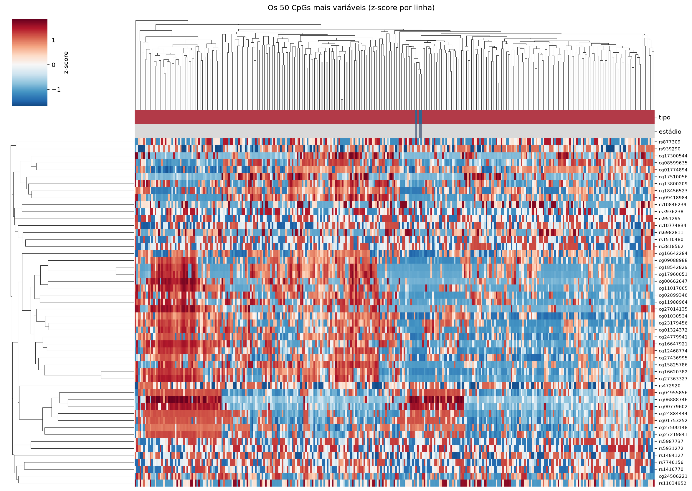
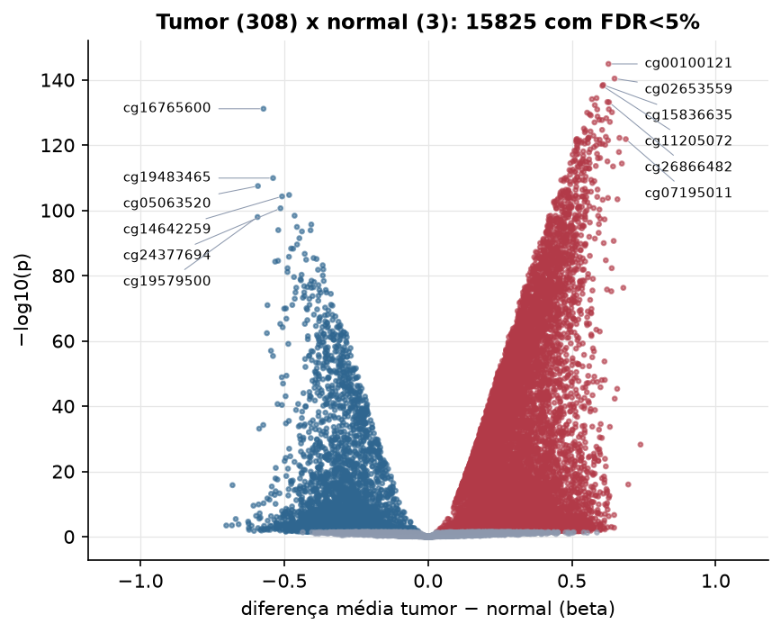

CESC · Metilação do DNA (450k)
Illumina Infinium HumanMethylation450, valores beta (0 a 1) · gerado em 21/10/2026 20:12
396.065CpGs medidos
372.146CpGs sem faltante
20.000CpGs
308amostras tumorais
3amostras normais
0,1%valores faltantes
Fonte: PanCanAtlas HM450 via API do Xena
O array tem ~485 mil CpGs. Para não ocupar espaço, guardamos estatísticas de todos os CpGs e só os 20.000 mais variáveis para PCA, UMAP e heatmaps.
Principais resultados
- A distribuição de beta é bimodal: a maioria dos CpGs está quase toda desmetilada (perto de 0, típico de ilhas CpG em promotores) ou quase toda metilada (perto de 1, corpo gênico e regiões intergênicas). 43,9% dos CpGs têm beta médio intermediário (0,2 a 0,8).
- Beta médio global: 0,470 nos tumores e 0,456 nos normais (sem hipometilação global no tumor).
- 20.000 CpGs medidos em 311 amostras (308 tumorais e 3 normais); 0,1% dos valores estão faltando.
- Os dois primeiros componentes principais explicam 22,5% e 8,6% da variância das features mais variáveis.
- Correlação mediana entre amostras: 0,21.
- Tumor x normal: 15825 CpGs diferentes com FDR < 5% (11661 maiores no tumor, 4164 maiores no normal; 3 pacientes têm o par tumor-normal).
- Mais aumentados no tumor: cg00100121, cg02653559, cg15836635, cg11205072, cg16964348, cg19868631, cg19839798, cg26866482.
- Mais reduzidos no tumor: cg16765600, cg19483465, cg05063520, cg04897892, cg14642259, cg24377694, cg23415219, cg19579500.
- Nenhum dos três primeiros componentes principais se associou a estádio, sexo, idade ou sobrevida com p < 0,05.
Distribuição global



Exploração dos CpGs mais variáveis
Distribuição dos valores


Estrutura das amostras




Tumor x normal

Features mais diferentes entre tumor e normal
| diferenca_tumor_menos_normal | t | p | fdr | |
|---|---|---|---|---|
| cg00100121 | 0.627 | 48.124 | 1.35e-145 | 2.7e-141 |
| cg02653559 | 0.648 | 46.539 | 4.06e-141 | 4.06e-137 |
| cg15836635 | 0.609 | 46.163 | 3.63e-139 | 2.42e-135 |
| cg11205072 | 0.606 | 45.552 | 6.95e-139 | 3.47e-135 |
| cg16964348 | 0.586 | 44.185 | 4.03e-135 | 1.61e-131 |
| cg19868631 | 0.57 | 43.938 | 8.53e-135 | 2.84e-131 |
| cg19839798 | 0.624 | 44.158 | 6.29e-134 | 1.8e-130 |
| cg26866482 | 0.629 | 43.537 | 7.31e-134 | 1.83e-130 |
| cg13463054 | 0.58 | 43.195 | 5.72e-133 | 1.27e-129 |
| cg16765600 | -0.572 | -42.794 | 7.43e-132 | 1.49e-128 |
| cg26654934 | 0.629 | 43.766 | 1.04e-131 | 1.9e-128 |
| cg15034345 | 0.588 | 42.71 | 1.2e-131 | 2.01e-128 |
| cg15778745 | 0.639 | 42.837 | 8.66e-131 | 1.33e-127 |
| cg17453780 | 0.553 | 42.342 | 1.14e-130 | 1.62e-127 |
| cg02907374 | 0.562 | 42.726 | 3.74e-130 | 4.99e-127 |
| cg23141355 | 0.566 | 42.14 | 7.99e-130 | 9.99e-127 |
| cg21282549 | 0.589 | 42.455 | 1.76e-129 | 2.07e-126 |
| cg21773872 | 0.62 | 42.1 | 6.16e-129 | 6.85e-126 |
| cg18856388 | 0.595 | 42.545 | 1.85e-128 | 1.94e-125 |
| cg04067139 | 0.605 | 42.78 | 2.12e-128 | 2.12e-125 |
| cg19513834 | 0.632 | 45.376 | 7.81e-128 | 7.44e-125 |
| cg02970836 | 0.579 | 41.384 | 1.11e-127 | 1.01e-124 |
| cg26394244 | 0.542 | 40.576 | 8.78e-126 | 7.63e-123 |
| cg14103680 | 0.605 | 40.663 | 2.23e-125 | 1.86e-122 |
| cg18443378 | 0.547 | 41.529 | 3.49e-125 | 2.79e-122 |
| cg07559273 | 0.565 | 40.326 | 6.6e-125 | 5.08e-122 |
| cg04638468 | 0.545 | 40.156 | 1.28e-124 | 9.47e-122 |
| cg16283362 | 0.575 | 40.902 | 1.34e-123 | 9.55e-121 |
| cg17508991 | 0.618 | 46.27 | 2.91e-123 | 2.01e-120 |
| cg07345734 | 0.559 | 40.263 | 4.29e-123 | 2.86e-120 |
Associação com variáveis clínicas
p-valores da associação dos três primeiros componentes principais (só tumores) com estádio (Kruskal-Wallis), sexo (Mann-Whitney), idade (Spearman) e sobrevida global (Cox univariado).
| estádio (Kruskal) | sexo (Mann-Whitney) | idade (Spearman) | sobrevida OS (Cox) | |
|---|---|---|---|---|
| PC1 (22,2%) | 0.151 | 0.21 | ||
| PC2 (8,5%) | 0.35 | 0.73 | ||
| PC3 (5,1%) | 0.517 | 0.33 |